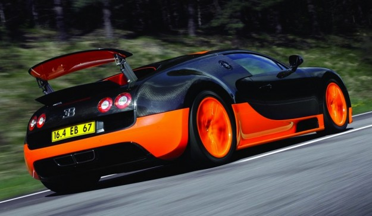
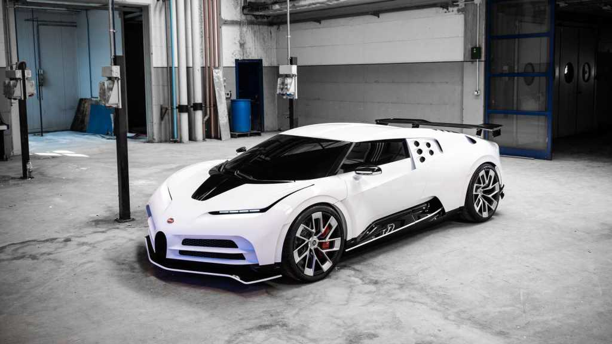

| Company name | BUGATTI Automobiles S.A.S. |
|---|---|
| Founder | Ettore Bugatti |
| Founded on | 1909, Molsheim, France |
| Headquarters | Molsheim, Alsace, France |
| Parent organization | Volkswagen Group |
| Chairman | Stephan Winkelmann |
| CEO | Stephan Winkelmann |
| No.of production plants | 1 |
| Customer service | -email- |
Automobiles Bugatti was a French car manufacturer of high-performance automobiles, founded in 1909 in the then-German city of Molsheim, Alsace by the Italian-born industrial designer Ettore Bugatti. The cars were known for their design beauty and for their many race victories. Famous Bugattis include the Type 35 Grand Prix cars, the Type 41 "Royale", the Type 57 "Atlantic" and the Type 55 sports car.
The company founder Ettore Bugatti, born and raised in Milan, Italy, succeeded in uniting this artistic approach with his technical innovations, thus laying the foundation of a design language that was to mould the Bugatti marque. The result was a series of vehicles far ahead of their time, and which are today numbered amongst the most valuable classic cars in the world. The brand’s central philosophy of “Art, Forme, Technique” is a description of its mystique.
The development of the Bugatti Veyron represented one of the greatest technical challenges in automotive history. The Veyron set two speed world records, in 2010 the Super Sport became the fastest production car in the world with a top speed of 431.072 km/h and since 2013, the Grand Sport Vitesse has been the world’s fastest production roadster with a top speed of 408.84 km/h driven with the roof down.
